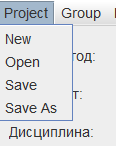
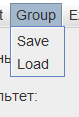
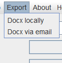

Компоненты меню
1. Подменю Project

Содержит следующие элементы:
- New – создает новый проект
- Open – открывает выбранный проект
- Save – сохраняет текущий проект
- Save As – сохраняет текущий проект в указанной директории
2. Подменю Group

Содержит следующие элементы:
- Save – сохраняет текущую группу
- Load – загружает выбранную группу
Для сохранения/загрузки группы необходимо выбрать номер группы в соответствующем поле
3. Подменю Export

Позволяет экспортировать созданный проект в формате docx по существующему шаблону